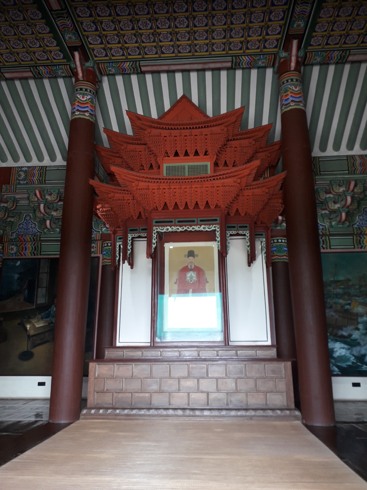

현충사는 충무공 이순신 장군의 나라 사랑 정신을 널리 알리고 이를 되새기기 위한 곳이다. 1706년에 아산 유생들이 조정의 허락을 받아 세운 사당이며, 1707년 숙종임금이 '현충사'라는 현판을 내렸다. 이후 충무공 이순신 조카인 강민공 이완을 모시는 사당이었으나 1868년 흥선대원군의 서원 철폐령으로 헐리게 되었다. 
일제강점기인 1931년에는 충무공 종가의 경제적 형편이 어려워져 충무공 묘소와 위토가 은행 경매로 넘어갈 위기에 처했다. 이에 동아일보를 중심으로 전국에서 이를 지키기 위해 기금 모금 운동을 통해 묘소와 위토를 지키고 1932년 6월 현충사 성역화 사업이 진행되면서 현재의 현충사를 다시 세웠으며, 1932년 지어졌던 구현충사는 지금의 위치로 옮기게 되었다. 해마다 충무공이 태어나신 4월 28일을 국가 기념일로 지정하여 다례 행사를 개최하고 있다.